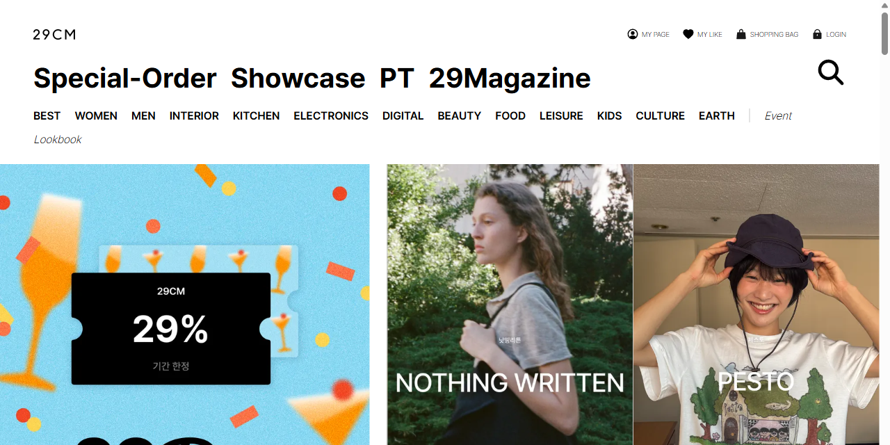
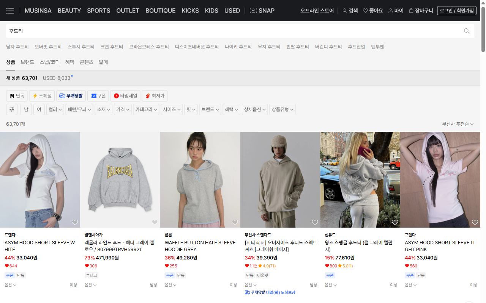
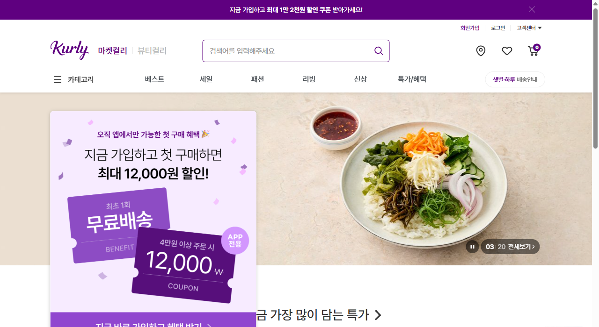
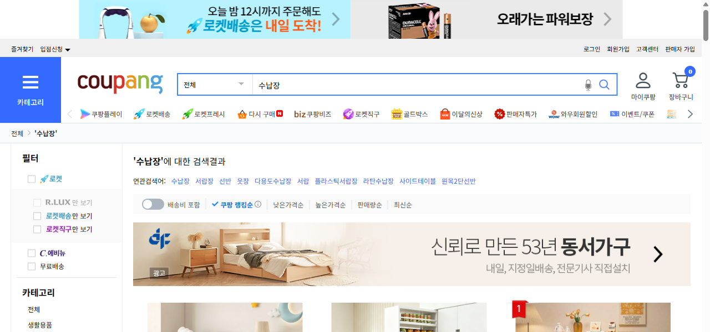

왜 굳이, 오늘의집에서 사는가.
그리고 '안 사는 이유'를 어떻게 돌파하는가.
사는 이유(강점)를 레버로, 경쟁사의 실제 액션을 벤치마크해 — 오늘의집의 이탈 요인을 하나씩 돌파하는 마케터의 실행안
오늘의집은 '물건'이 아니라 '라이프스타일'을 판다
오늘의집은 "남들은 어떻게 살지?" 구경하다 홀린 듯 결제하게 만든다.
사는 이유 4가지
발견-콘텐츠-구매-시공으로 이어지는 독보적 구매 여정. 대체 불가능한 락인의 원천.
안 사는 이유 4가지
빛이 강할수록 그림자도 짙다. 같은 강점이 특정 유저에겐 강력한 이탈 요인이 된다.
강점으로 약점을 돌파
사는 이유를 레버로, 경쟁사 액션을 벤치마크해 이탈 요인을 정면 돌파한다.
이 발표의 구조 — 사는 이유(4) → 안 사는 이유(4) → 강점 레버로 약점 돌파(4, 경쟁사 캡처 포함).
여기서 '사야만 하는' 네 가지 이유
UGC 기반 '실제 남의 집' 구매
뻔한 흰 배경 상세페이지가 아니라 평수·구조가 비슷한 실제 집을 보고 산다. 사진 속 가구의 태그를 누르면 바로 구매 — "이 소파 어디 거지?"의 탐색비용을 0으로.
내 공간에 맞춘 고도화 필터링
주거형태(아파트·원룸)·평수·스타일(모던·내추럴·북유럽)·색상까지 세밀하게 거른다. 제품과 연출샷을 동시에 보여줘 '우리 집에 맞나' 실패 확률을 줄인다.
'실패 없는' 공간정보 리뷰 생태계
리뷰에 작성자의 주거형태(원룸 7평·아파트 30평)가 함께 표시. 스튜디오 연출컷이 아니라 형광등 아래 진짜 발색·사이즈감이 구매 확신을 준다.
배송부터 시공까지 한 번에
가구의 골칫거리 '배송일 맞추기'를 지정일 배송·설치로 해결. 도배·조명·커튼 시공까지 한 플랫폼에서 검증된 후기로 — 강력한 락인(Lock-in).
네 이유의 공통점 — '발견 → 영감 → 구매 → 시공'이 한 흐름. 제품이 아니라 구매 여정 자체가 경쟁우위. 이 네 강점이 곧 약점 돌파의 레버가 됩니다.
핵심 USP — '태그'가 만든 탐색비용 0

왜 강력한가
일반 커머스는 '욕구 → 검색 → 비교 → 구매' 4단계. 오늘의집은 콘텐츠를 구경하다 '발견 → 태그 → 구매'로 단축 — 구매를 결심하기 전에 욕구가 먼저 생긴다.
마케터에게 주는 의미
목적형 키워드 광고보다 '맥락 속에 제품을 녹이는 것'이 유입의 본질. → 모든 약점 돌파의 출발점.
반대로, '안 사게 되는' 네 가지 이유
'모나미 인테리어'의 늪
트렌드를 따라 사다 보면 '어디서 많이 본 집'이 된다. 화이트&우드 미니멀에 갇혀, 빈티지·하이엔드·독창적 취향을 찾는 유저에겐 매력도 하락.
보정 필터와 '감성 왜곡'
베스트컷은 완벽한 채광에 보정된 사진. 좁고 어두운 내 방에선 그 느낌이 안 산다. 마감·내구성 등 하드웨어 퀄리티는 감성 사진으로 파악 불가.
"오늘의집이 제일 싸진 않다"
발견형 커머스라 발견 후 네이버·쿠팡에서 모델명 검색 → 최저가 이탈이 빈번. 입점 수수료 구조상 가격이 높게 책정되기도. 영감만 얻는 체리피커 발생.
익일 배송에 길들여진 눈높이
직배송 외엔 브랜드별 개별 배송비·제각각 배송일. 로켓·샛별배송에 익숙한 유저에겐 느린 배송이 피로. 중개 특성상 CS가 즉각적이지 않다는 불만.
한 줄 요약 — 최저가·빠른 배송이 최우선이거나, '양산형 감성'을 거부하는 유저에게 오늘의집은 매력적이지 않다. ← 지금부터 이 4가지를 하나씩 돌파합니다.
강점이 곧 약점이 된다 — 그래서 강점으로 돌파한다
| 강점 (사는 이유) | 그 이면의 그림자 (안 사는 이유) | 돌파에 쓸 레버 | 경쟁사 벤치마크 |
|---|---|---|---|
| ① UGC 맥락 구매 | 취향 하향 평준화·클론 디자인 | 큐레이션·필터로 '취향'을 판다 | 29CM (매거진·룩북) |
| ③ 리얼 리뷰 | 보정 왜곡·디테일 확인 어려움 | 동영상·공간정보 리뷰 강화 | 무신사 (실착 스냅·후기) |
| ① 발견 + ④ E2E | 최저가 아님·타 플랫폼 이탈 | 단독 구성·번들·포인트 | 컬리 (단독·멤버십) |
| ④ End-to-End 케어 | 파편 배송·느린 CS | 지정일 배송·설치 전면화 | 쿠팡 (로켓·지정일설치) |
| 핵심 통찰 | 약점은 강점의 그림자 → 없애는 게 아니라 '강점을 더 밀어' 가린다 | ||
다음 4장 — 각 약점을 ①강점 레버 → ②경쟁사 실제 액션(캡처) → ③오늘의집 액션 순서로 돌파합니다.
'양산형 감성'을, 취향 큐레이션으로 돌파
"오늘의집 따라 사면 다 똑같은 집이 된다" — 화이트&우드 미니멀에 갇혀 독창적 취향 유저가 이탈.
이미 1,200만 집들이 안에 온갖 취향이 있다. '평균'만 노출하니 평준화로 보일 뿐 — 니치 취향을 큐레이션·필터로 끌어올리면 강점이 된다.
오늘의집 액션
- 미드센추리·빈티지·맥시멀 등 니치 스타일 큐레이션관 + 전문가/디자이너 에디토리얼 시리즈
- 추천 알고리즘에 '비슷한데 색다른' 발견 슬롯 — 베스트만 미는 평준화 방지
- 취향 필터를 색상·무드·소재까지 세분화해 '나만의 집' 경로 강화

에디토리얼·셀렉트 큐레이션으로 '대중 트렌드'와 차별화 → 오늘의집은 같은 무기를 UGC 규모로 할 수 있다.
'사진과 현실의 괴리'를, 리얼 리뷰로 돌파
보정된 베스트컷이 내 좁고 어두운 방에선 안 산다. 마감·내구성 등 하드웨어 디테일은 감성 사진으로 확인 불가.
오늘의집은 이미 '주거형태·평수'가 붙은 리뷰를 가졌다. 여기에 보정 없는 동영상·디테일을 더하면 '실패 없는 구매'가 완성된다.
오늘의집 액션
- 전환 구간 상세페이지에 보정 없는 동영상·움짤 리뷰 + 마감 클로즈업 우선 노출
- 리뷰에 평수·채광·천장고 등 공간 메타데이터 입력 유도 → "우리 집 핏" 매칭
- AR 배치 미리보기로 '내 공간에 둔 모습'을 결제 전에 확인

스냅(실착 UGC)과 체형·사이즈 후기로 '사진≠현실' 불안을 해소 → 오늘의집은 공간정보 리뷰로 더 강하게 가능.
'네이버 최저가 검색'을, 단독 혜택으로 돌파
"여기서 발견 → 네이버·쿠팡에서 모델명 검색 → 최저가로 이탈". 영감만 얻는 체리피커가 매출을 샌다.
가격 비교가 불가능한 구성을 만들면 된다. 발견한 그 자리에서, 다른 데 없는 단독 구성·번들·포인트로 즉시 결제하게.
오늘의집 액션
- 상세 최상단 [오늘의집 단독 구성·단독 컬러·단독 특가] 배지로 가격 비교 자체를 무력화
- 소품+가구 번들가 — 모델명 단일 비교가 안 되게 묶음 구성
- 리뷰 작성 시 포인트 100% 적립 + 멤버십으로 "여기가 제일 이득" 각인

첫 구매 단독 혜택·멤버십으로 '여기서 사는 이유'를 가격으로 못박음 → 오늘의집은 단독 구성+포인트로 응용.
'느리고 제각각인 배송'을, 지정일·설치로 돌파
브랜드별 개별 배송비·제각각 도착일, 중개 특성상 느린 CS. 로켓·샛별에 익숙한 눈높이엔 큰 피로.
가구는 '빠름'보다 '원하는 날, 설치까지'가 핵심. 오늘의집은 이미 이 강점을 가졌다 — 전면에 내세우고 표준화하면 약점이 무기가 된다.
오늘의집 액션
- 직매입(오늘의집 배송) 지정일·설치를 상세·검색에 배지로 전면 노출
- 입점사 배송 SLA 표준화 + 통합 배송추적으로 '제각각' 경험 제거
- 설치·하자 CS 책임 응대(중개 책임제)로 "느린 CS" 불안 차단

속도(로켓)는 못 이겨도 — 가구는 '지정일+설치'가 진짜 페인. 오늘의집의 기존 강점을 경험 표준으로 끌어올린다.
네 돌파를 하나의 풀펀널로 잇는다
기획전 · '오하특' 메인 구좌 + FOMO
MD 협업으로 메인 구좌를 확보해 폭발적 유입을. 들어온 트래픽이 새지 않게 한정 수량 타임세일로 '지금 안 사면 손해'를 건다.
소품 레이어링 → 메인 가구 리타게팅
고가 가구는 전환이 길다. 저렴한 소품으로 첫 구매 장벽을 낮추고, 만족 유저에게 메인 가구를 리타게팅해 객단가를 키운다.
관통 원칙 — "내 제품이 '광고'로 보였나, '영감'으로 보였나". 후자면 유입·전환·재구매는 자연스럽게 따라온다.
이 분석을 실행으로 옮길 사람
발견형 커머스 퍼널을 이해한다
'영감 → 발견 → 전환'으로 이어지는 콘텐츠 커머스 구조를 소비자·마케터 양쪽 시선으로 분해 — 이 발표가 그 증거.
경쟁사를 뜯어보고 액션으로 옮긴다
29CM·무신사·컬리·쿠팡의 실제 액션을 직접 캡처·해부해 오늘의집 맥락의 실행안으로 번역.
데이터로 이탈을 잡아본 5년차
퍼포먼스·CRM 운영으로 유입→전환 퍼널의 누수 지점을 SQL·코호트로 찾아 액션으로 닫아온 경험.
콘텐츠를 '광고' 아닌 '영감'으로
맥락형 UGC·썸네일 최적화로 광고 피로 없이 유입을 만들고, 단독 혜택·리얼 리뷰로 전환을 닫는 접근.
약점은 강점의 그림자다.
그래서 강점을 더 밀어 돌파한다.
취향은 큐레이션으로, 보정 불신은 리얼 리뷰로, 최저가 이탈은 단독 혜택으로, 배송 피로는 지정일·설치로 — 경쟁사가 증명한 방법을 오늘의집의 자산으로 더 크게 실행하면, 유입·전환·재구매가 따라옵니다.